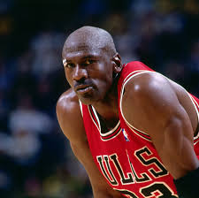

1. michael jordan
Michael Jeffrey Jordan (born February 17, 1963), also known by his initials MJ,[8] is an American businessman and retired professional basketball player who is a minority owner of the Charlotte Hornets of the National Basketball Association (NBA). He played 15 seasons in the NBA between 1984 and 2003, winning six NBA championships with the Chicago Bulls. Widely considered to be one of the greatest players of all time,[9][10][11] he was integral in popularizing basketball and the NBA around the world in the 1980s and 1990s.[12] He is one of the world's richest celebrities, with a $3.8 billion net worth as of 2025.[13]
2. lebron james
.jpg)
LeBron Raymone James Sr. (/ləˈbrɒn/[1] lə-BRON; born December 30, 1984) is an American professional basketball player for the Los Angeles Lakers of the National Basketball Association (NBA). Nicknamed "King James", he is the NBA's all-time leading scorer and has won four NBA championships from 10 NBA Finals appearances, having made eight consecutive appearances between 2011 and 2018.[2] He also won the inaugural NBA Cup in 2023 with the Lakers and has won three Olympic gold medals as a member of the U.S. national team. James is widely considered one of the greatest basketball players of all time.[3][4]
3. koby bryant
.jpg)
Kobe Bean Bryant (/ˈkoʊbi/ KOH-bee; August 23, 1978 – January 26, 2020) was an American professional basketball player. A shooting guard, he spent his entire 20-year career with the Los Angeles Lakers in the National Basketball Association (NBA). Widely regarded as one of the greatest and most influential basketball players in history, Bryant won five NBA championships and was an 18-time All-Star, four-time All-Star MVP, 15-time member of the All-NBA Team, 12-time member of the All-Defensive Team, the 2008 NBA Most Valuable Player (MVP), two-time NBA Finals MVP